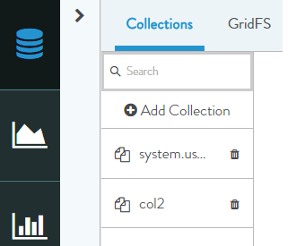
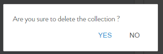

Database > Delete (Drop) Collection
- We can find icon to delete on each collection
- Click on delete icon. See Figure below.

- Click Yes on the confirmation alert to delete the collection. See figure below.

The collection along with all its
documents will then be dropped.
previousnext